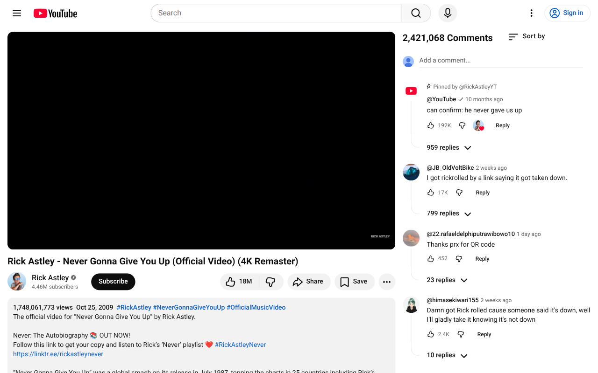
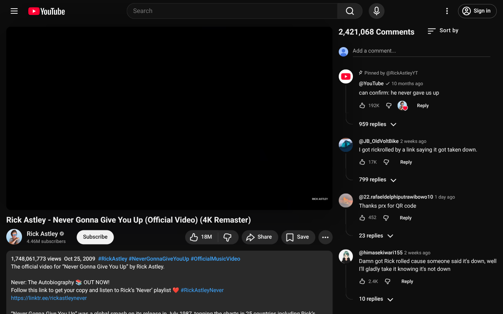
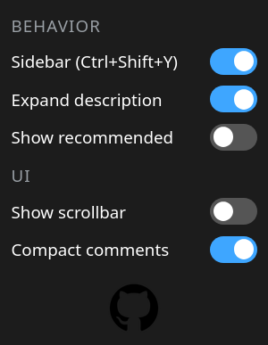

https://www.youtube.com/watch?v=dQw4w9WgXcQ
Behaviour Controls
- Sidebar — Turn right-side comments on/off
- Expand description — Expand when sidebar mode is enabled; collapse when disabled
- Related videos — Show or hide related videos
UI Controls
- Hide scrollbar — Hide scrollbars. Supports inner (comments section) and outer (entire sidebar) scrollbars separately
- Compact comments — Tighter comment spacing
- Static comment box — Keeps a fixed container in place while comments load, preventing UI layout shifts
Experimental Controls
- Comments width — Adjust the width of the comments sidebar (15-40%)
- Hide side margins — Remove spacing on the left and right sides of the video
Shortcuts
- Windows: Ctrl+Shift+Y
- Linux: Ctrl+Shift+U
- macOS: Cmd+Shift+Y